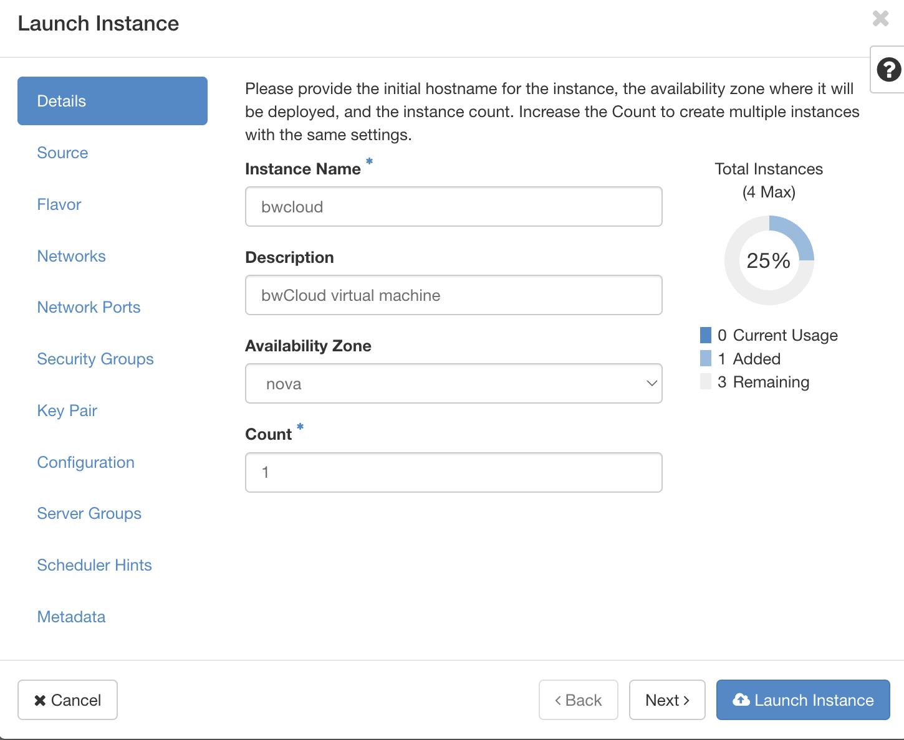
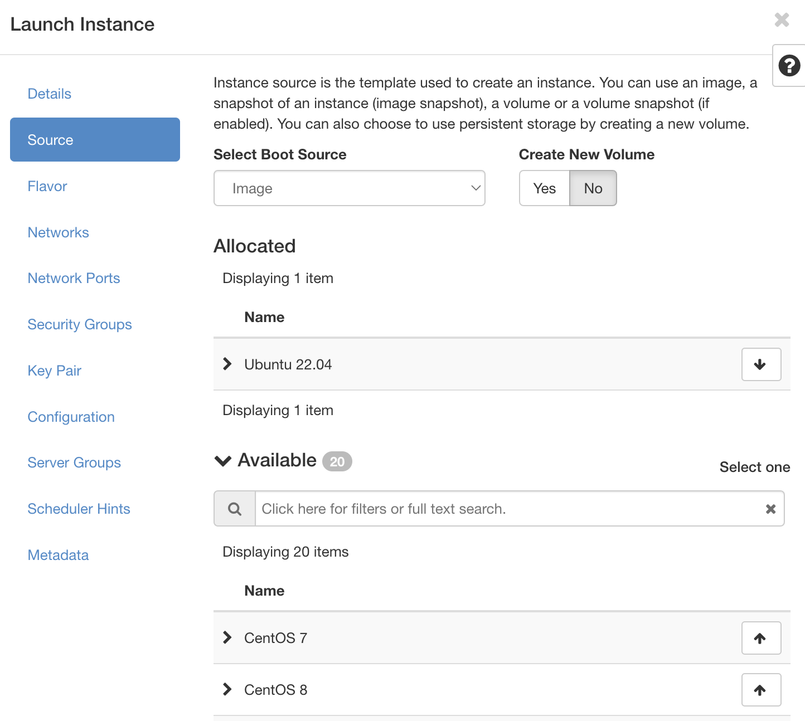
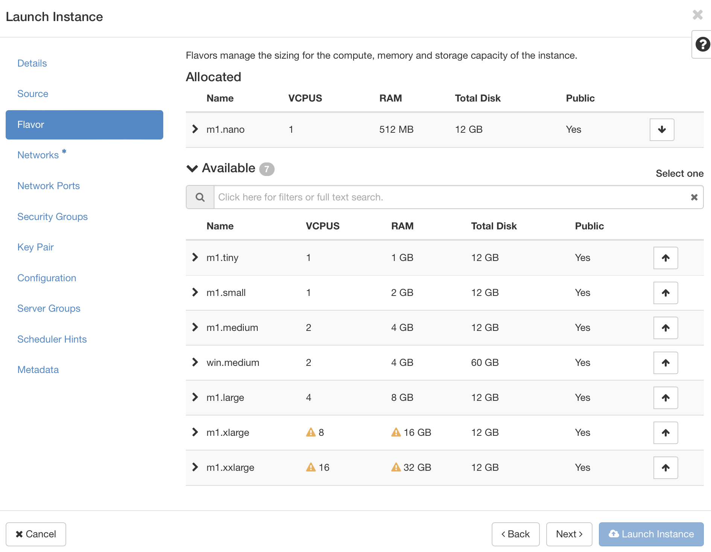
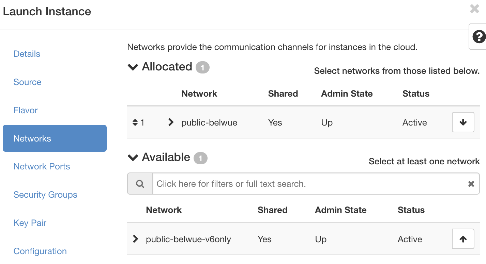
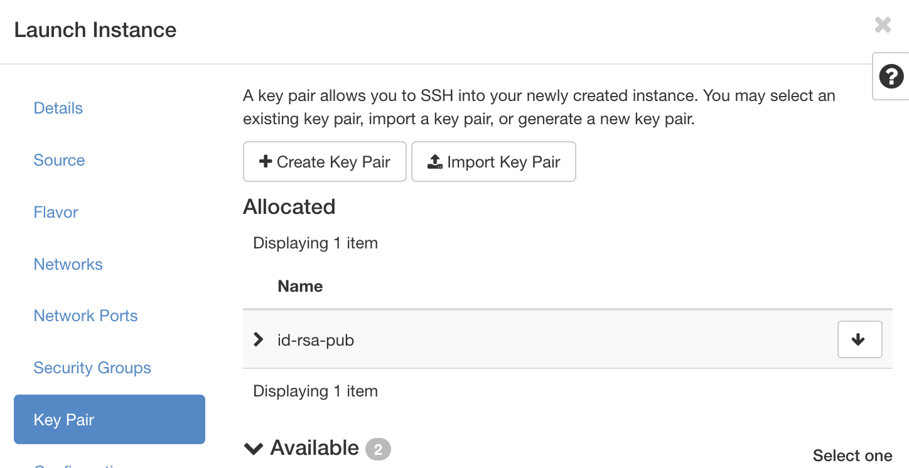
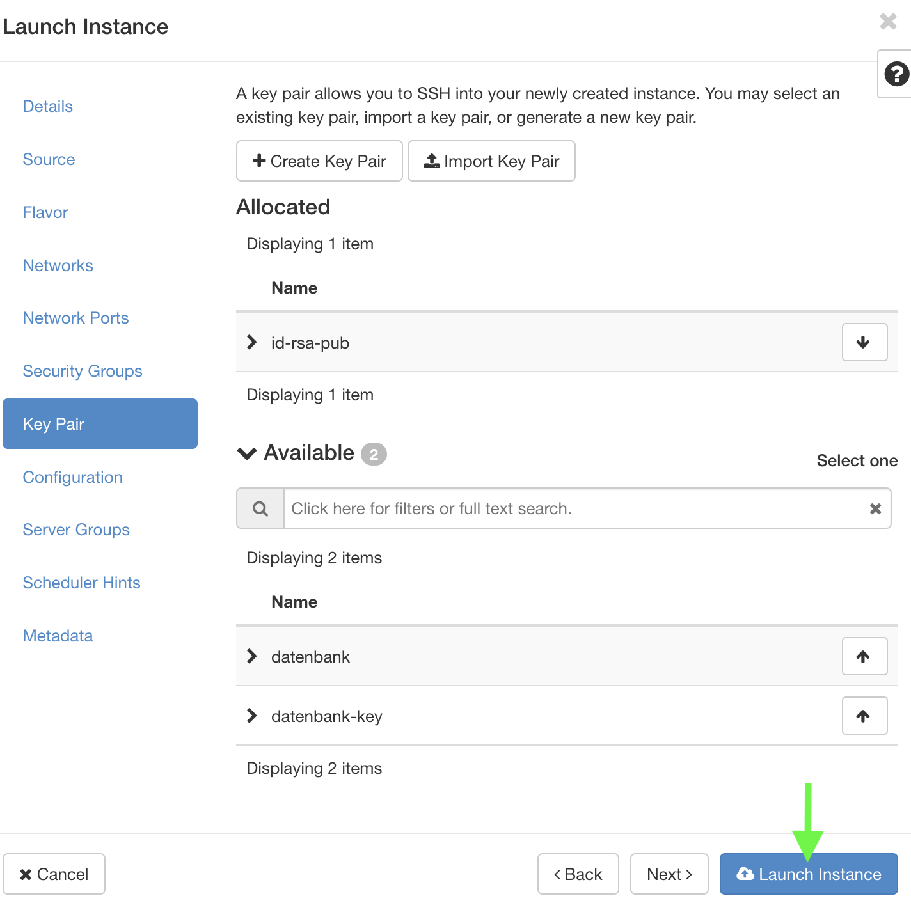
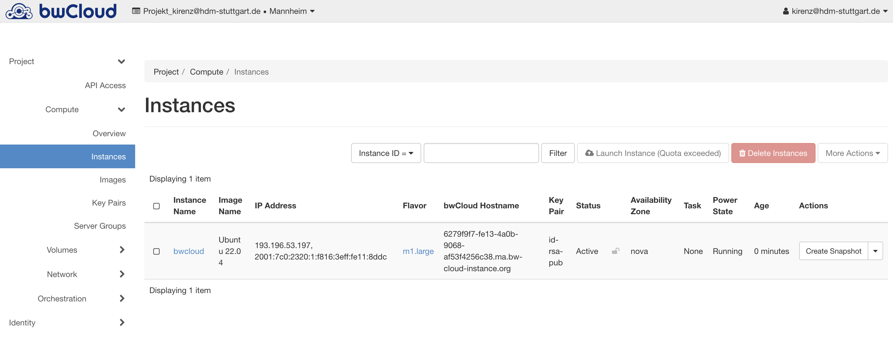

3 Create a launch instance
Open your bwCloud Dashboard
Navigate to Instances in the left side menue.
Select Launch Instance
Now follow the steps outlined below.
3.1 Details

- Provide the instance name. We choose:
bwcloud - Provide a description for the instance, e.g.
bwCloud virtual machine - Choose count
1
3.2 Source

Instance source is the template used to create an instance.
- Choose
Ubuntu 22.04(click on the arrow at the right)
3.3 Flavor

Flavors manage the sizing for the compute, memory and storage capacity of the instance. We use m1.nano.
- Choose
m1.nano(click on the arrow at the right)
3.4 Networks

Networks provide the communication channels for instances in the cloud.
- We use public-belwue
3.5 Network Ports
Ports provide extra communication channels to your instances. You can select ports instead of networks or a mix of both.
- We dont use network ports
3.6 Security Groups
Choose default and your custom security groups
Follow this bwCloud-tutorial to open a port.
3.7 Key Pair

Select the key pair from step create-key-pairs.
Here, it’s called “id-rsa-pub”
3.8 Launch Instance

- We are done and you can click on “Launch Instance”.
3.9 Dashboard

Refresh your browser
You should see your newly created instance in your dashboard.
Click on the instance name to see more details